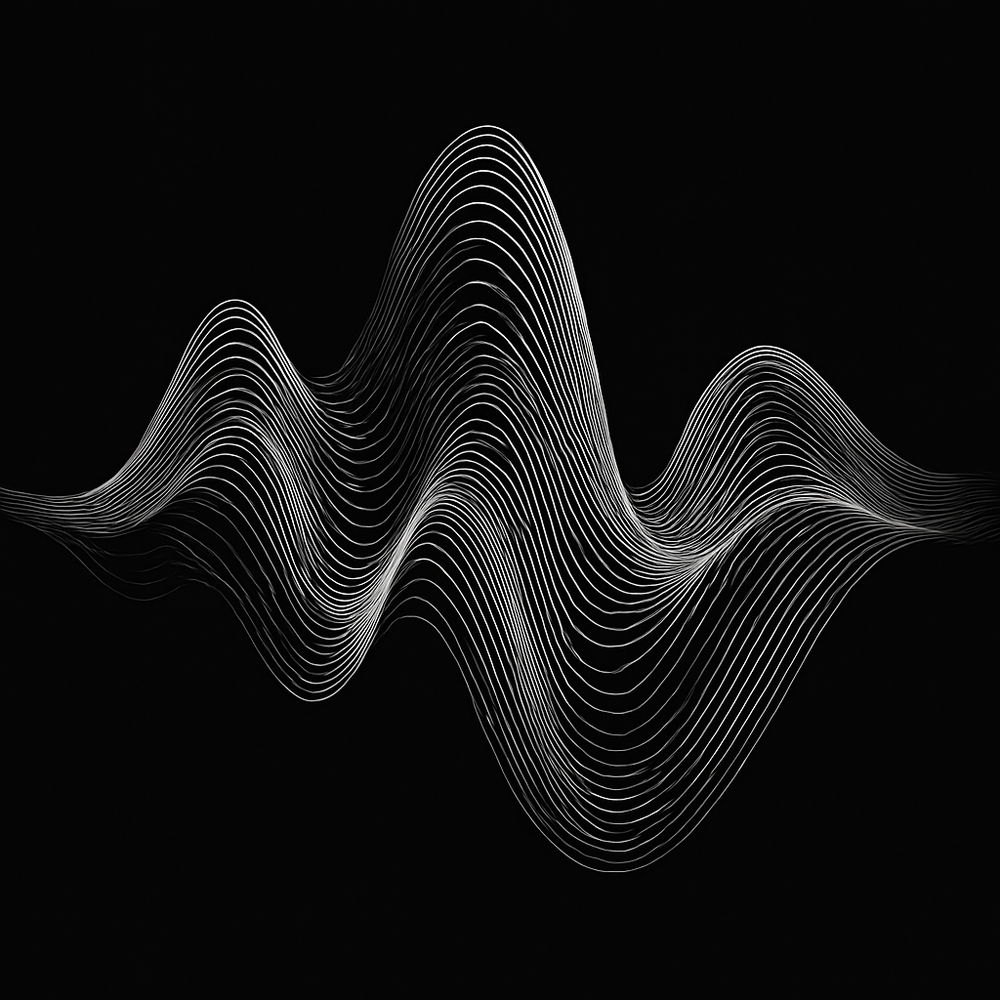

Harvesting machine vibration to power small electronics.
A concept for converting vibration from appliances and machinery into electrical power using a triboelectric nanogenerator. The engineering challenge is getting enough usable energy to a real load, consistently.
Third place at Camp 2030
UNITE 2030 · New York · 2023
[1]

Concept illustration
The project
Where it started
I developed VibraVolt with Emily Roberts and Zainab Alyosha at UNITE 2030’s Camp 2030 in September 2023. Our proposal addressed SDG 7: Affordable and Clean Energy. It placed third overall in the event’s pitch competition.
[1]
The starting point was vibration in appliances: could some of that mechanical energy be recovered as electricity? A practical first use to investigate is a sensor mounted on a vibrating machine, storing energy between readings. The potential benefit is less wiring or fewer battery replacements where maintenance is difficult.
The physics
From movement to electrical power
A triboelectric nanogenerator, or TENG, combines contact electrification with electrostatic induction. One possible arrangement is a pair of layers that repeatedly touch and separate as the housing vibrates.
[2]
01
Contact
Two dissimilar surfaces touch and acquire opposite surface charges. Sliding friction is not required in a contact–separation design.
[5]
02
Separation
Movement changes the electric potential between the electrodes, driving current through an external circuit. The return motion reverses the current.
03
Power management
A rectifier produces one-way current. Further circuitry transfers energy into storage and regulates the supply for the electronics.
[3]
04
A useful load
Stored energy runs a sensor or radio transmission. The energy collected between events must cover the event itself, standby consumption and circuit losses.
Published evidence
What other researchers have demonstrated
Fan, Tian & Wang · 2012
A working triboelectric generator
The original flexible-generator study demonstrated electrical output from mechanically deformed polymer layers and electrodes. It established a physical route from movement to electrical energy.
[2]
Kim et al. · 2024
A wireless reading every 30 minutes
A vibration harvester with three mechanical degrees of freedom powered a temperature/humidity sensor and transmitted data every 30 minutes under the study’s experimental conditions. Its output increased around its resonant frequencies.
[4]
These are results from published research devices. They establish the basis for the concept; they are not measurements of VibraVolt.
The energy budget
Measure energy delivered, not just voltage
A voltage spike does not tell you how long a sensor can run. The useful measurements are average power into a specified load and energy accumulated in storage over a stated period. TENG performance depends on the materials, geometry, motion and electrical load.
[5]
Power management matters. A TENG’s pulsed output cannot be treated as a steady battery supply; rectification, energy transfer and storage all affect what reaches the electronics.
[3]
Engineering next steps
What a prototype needs to prove
The next step is a measured energy budget on a specific machine. A credible test would report:
Available motion
Vibration frequency, acceleration and displacement at the mounting point, across normal operating conditions.
Usable output
Average DC power after conditioning, energy stored, startup time and the actual sensor duty cycle. Include the circuit’s own consumption and storage leakage.
Effect on the machine
Power drawn with and without the harvester at the same speed and load. Extracting mechanical energy adds a load; a reduction in machine electricity use must be measured separately.
Service life
Output after repeated contact cycles, material wear, humidity and temperature changes. Report the test duration and conditions alongside the result.
Practical value
Installed cost and maintenance compared with a battery, wiring, or a piezoelectric or electromagnetic harvester suited to the same vibration source.
Success would mean a useful electronic task runs reliably from the measured vibration source, with a clear advantage over the alternatives. Claims about machine efficiency or emissions savings would need additional system-level evidence.